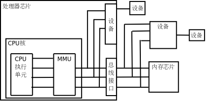
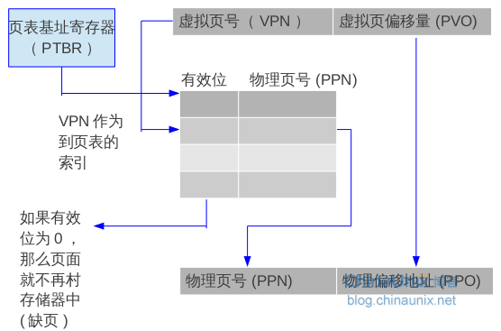
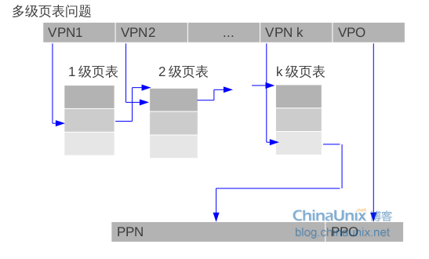
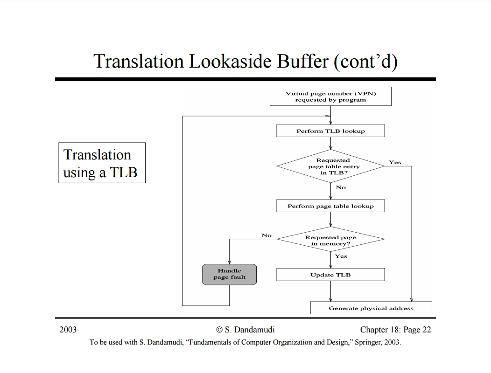
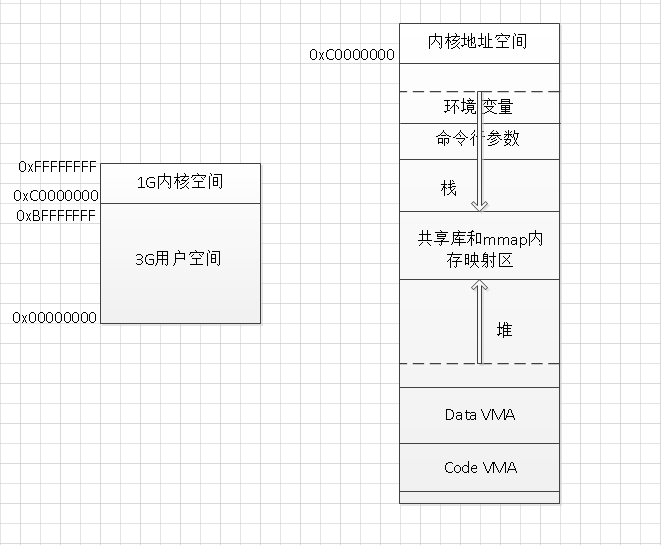

目录
第十章、虚拟存储器
需要理解的要点
1. 虚拟存储器与cpu寻址的关系
2. 虚拟地址、各种地址转换
3. 虚拟存储器和文件系统的关系
4. 进程的地址空间
5. 进程如何加载到内存中
6. 进程之间的共享、共享库与虚拟存储器的关系
此篇文章写的不错
virtual_address_to_phycial_address.pdf
虚拟存储器的作用
-
作为缓存的工具
物理内存调入调出的单位是页，所以虚拟存储器的对应也是page，物理页面，被成为页帧page frame。在任何时刻，虚拟页面的集合部分都分为三种。
1. 未分配的 ：没有数据相关联，也没有和物理存储器上的相关页面有映射转换关系
2. 缓存的 ：当前缓存在物理存储器中的已分配的页面
3. 未缓存的 ：当前没有缓存在物理存储器中的已经分配页面 —— 例如存储器映射，将磁盘文件映射到虚拟内存但是并没有实际copy文件到物理内存中。 -
作为存储器的管理工具
操作系统为每个进程创建了一个独立的页表，多个虚拟页面可以映射到同一个共享物理内存页面中。按需页面调度和独立的虚拟地址空间的结合对系统中存储器的使用和管理造成了深远的影响，特别地，VM简化了，链接、加载、共享代码和数据，以及对应用分配存储器。- 简化链接
文本区总是从虚拟地址0x08048000处开始…，因此这就允许简化了链接器的实现，允许链接器生成全链接的可执行文件，所以就解释了为什么linux中使用objdump工具获取elf文件的地址从0x08048000开始。 - 简化共享
每个进程必须调用相同的操作系统内核代码，而每个c程序都会调用标准库中的程序，比如printf。操作系统通过将不同的进程中适当的虚拟页面映射到相同的物理页面，从而安排多个进程共享这部分代码的一个拷贝，而不是在每个进程中都包含单独的内核和C标准库的拷贝。 - 简化存储分配
当程序调用malloc分配堆空间时候，由于页表工作的方式，操作系统没必要分配K个连续的物理存储器页面。页面可以随机分散在物理存储器中。 - 简化加载
虚拟存储器可以使得加载可执行文件和共性目标文件到存储器变得容易。elf可执行文件中的.data和.text节是相邻的，为了加载这些节到一个新创建的进程中，linux加载程序分配了一个从地址0x08048000处开始的连续虚拟页面区域，将他们标识为无效的（未缓存），并将他们的页表条目执行目标文件中适当的位置。
很重要的一点是，加载器从不磁盘中拷贝任何数据到存储器中，当每个页面第一次被引用时候虚拟存储器按需地自动将数据从磁盘调入到存储器。
- 简化链接
- 作为存储器保护的工具
实际的页表中为每个条目添加一些许可位，从而控制对一个虚拟页面访问。如果指令违反了这些许可条件，那么就会触发一个一般保护故障，将控制传递给一个内核中的异常处理程序。Unixshell典型地将这种一场报告为“段错误”，segmentataion fault。
地址翻译

地址翻译：也就是虚拟地址VA到物理地址PA的转换 名词解释： MMU:memory management uint VPN VPO: Virtual page number :Virtual page offset PPN PPO: Physical page number:Physical page offset TLB: PDBR: page directory base register PTBR: page table base register PTE: page table entry 页表条目 PDE: page directory entry 页目录条目
地址构成
虚拟地址va的组成部分
| 符号 | 描述 |
|---|---|
| VPO | 虚拟地址页面偏移量 |
| VPN | 虚拟页号 |
| TLBI | TLB索引 |
| TLBT | TLB标记 |
因为TLB采用全相连映像或者组相连 ，所以TLBI作为组的索引字段
================================================================
物理地址PA组成部分
| 符号 | 描述 |
|---|---|
| PPO | 物理地址页面偏移量 |
| PPN | 物理页号 |
| CO | 缓冲块内字节偏移量 |
| CI | 高速缓存索引 |
| CT | 告诉缓存标记 |
由上表可以看出来由于物理内存在实际使用中为了进一步提高cpu访存速度，会在cpu和存储器之间加一个高速缓存SRAM，所以有作为高速缓存的映射字段CO CT CI
地址翻译过程
多级页表


翻译过程
start： if(在TLB中查询到有对应的条目) { 直接将对应条目PTE中抽取PPN与VPO合并为物理地址 } else //TLB查询未能命中 { if(页表查询命中) { 从页表中取出PPN与VPO合并为物理地址 } else//页表查询未命中 { 引发页面错误，页面换入； goto start; } }
如下图：

存储器映射
映射一个虚拟页面的结合到任意一个文件的任意位置的概念叫做存储器映射。Unix提供了一个叫做mmap的系统调用，允许应用程序进行自己的存储器映射。
注意这里的存储器映射是指将磁盘上的文件映射到进程的虚拟地址空间，当进程可以直接通过访问内存的方式访问一个文件，当然这里的映射实际并没有copy实际的文件到内存中，当进程访问文件时会发生缺页，此时文件才会被换入到内存区域中。（如上图的共享库和mmap内存映射区）
一个进程的地址空间
一个进程的地址空间

首先要知道的是每个进程使用相同的存储器映像地址空间
从0xFFFFFFFF~0xBFFFFFFF为内核虚拟存储区
从0xC0000000向下为用户栈区 从高地址向底地址生长 从0x40000000向上为共享库的存储器映射区
从0x08048000向上为只读数据段开始位置 为.init .text .rodata 代码段和只读数据段;继续向上为.data .bss 为数据段
动态存储器分配
动态存储分配器维护着一个进程的虚拟存储器区域称为堆heap,在大多数的Unix系统中，堆是一个请求二进制零的区域，它紧接在未初始化的bss区域之后，并且向上生长。对于每个进程，内核维护一个变量brk，它指向堆的顶部。
动态存储器通过隐式空闲链表来实现。任何实际的分配器都需要一些数据结构来允许它区分已经分配的块和空闲块，大多数分配器将这些信息嵌在块本身。
例如
一个简单的堆块的格式如下
| 一个堆块 |
|---|
| header |
| 有效载荷 |
| 填充 |
| footer |
- header部分为块的大小信息，因为可能涉及到对齐，例如分配时按照8字节对齐的话，header的最后三位为一直是0，所以可以释放剩余3位编码其他信息，例如取最后一位来标识块是已分配(1)还是空闲的(0) ,另外为了方便隐式空闲链表工作，回收已经被释放的块，如果一块的后边是可合并的那么容易办到直接扩展就行，但是如过是当前块的前边需要合并呢？单向链表是代价会是线性时间，所以这时候如果在块的尾部也追加一个header一样的尾标记那么就容易实现了
- 合并空闲块的时机也是需要考虑的事情
- 可以立即合并，一旦free就合并空闲块
- 可以推迟合并，等到某个时刻之后进行合并，例如在找不到合适的块的时候进行空闲块的合并。
关于swap 分区
1. What is swap?
Swap space is the area on a hard disk which is part of the Virtual Memory of your machine, which is a combination of accessible physical memory (RAM) and the swap space. Swap space temporarily holds memory pages that are inactive. Swap space is used when your system decides that it needs physical memory for active processes and there is insufficient unused physical memory available. If the system happens to need more memory resources or space, inactive pages in physical memory are then moved to the swap space therefore freeing up that physical memory for other uses. Note that the access time for swap is slower therefore do not consider it to be a complete replacement for the physical memory. Swap space can be a dedicated swap partition (recommended), a swap file, or a combination of swap partitions and swap files.
swap空间在linux中被用于当物理内存(RAM)被耗尽时。当系统需要更多的内存资源而RAM已经满了，那么那些不被使用的页将会被替换到swap空间中。尽管swap分区对于RAM很小的机器很有用，但是，它不能够替代RAM，因为swap空间是外部磁盘空间，它要比物理内存慢很多很多。 (refer from Here)
2. 关于swap空间
swap空间：可以是一个专用的交换分区——也就是我们安装linux系统时候需要分配的swap分区（swap partion），也可是一个swap file，或者a combination of swap partion and swap files。
3. swap分区的用处
Memory consuming programs Sometimes, a large program (like LibreOffice, Neverwinter Nights, or a video editor) make the entire system need extra memory. A significant number of the pages used by these large programs during its startup may only be used for initialization and then never used again. The system can swap out those pages and free the memory for other programs or even for the disk cache. In these cases, swap will be used to help the system handle any extra load.
Hibernation (suspend-to-disk 系统挂起到硬盘) The hibernation feature 休眠功能 (suspend-to-disk) writes out the contents of RAM to the swap partition before turning off the machine把RAM的内容暂存到swap中. Therefore, your swap partition should be at least as big as your RAM size. The hibernation implementation currently used in Ubuntu, swsusp, needs a swap or suspend partition. It cannot use a swap file on an active file system（ubuntu里边不能在主分区里用交换文件来完成挂起功能，必须使用交换分区或者暂存分区）.
Unforeseeable Circumstances不可预见的突发情况 Unforeseeable events can and will happen (a program going crazy程序跑飞了, some action needing much more space than you thought, or any other unpredictable combination of events不可预料的事件). In these cases, swap can give you an extra delay to figure out what happened, or to finish what you are working on.
Optimizing memory usage 优化内存使用 Since mechanical hard drives are considerably slower than RAM (SSD - Solid State Drive - storage is not as slow as physical drives, but still slower than RAM), when you need a file (be it a data file like a video, executables like Firefox, or libraries), the Linux kernel reads the file into RAM and keeps it there, so that the next time you need it, it is already in RAM and data access is much faster. The portions of RAM that accelerate disk read are called “cached memory.” You will notice that they make a huge difference in terms of responsiveness. The Linux kernel automatically moves RAM reserved by programs–but not really used–into swap, so that it can serve the better purpose of extending cached memory. linux内核自动的将RAM中被应用程序使用的保留的但是并没有实际使用的内存页面，放入到swap分区中，从而达到扩展内存的目的.Optimizing Swap performance Because swap space uses a disk device, this can cause performance issues in any system that uses swap space significantly because the system itself may also be using the same disk device at the same time that it is required for swap operations. One way to reduce this problem is to have swap space on a different physical drive so that the competition for that resource is either reduced or eliminated.
Example Scenarios(交换分区的分配 举个栗子)
(last 3 columns denote swap space)
RAM(MB) No hibernation With Hibernation Maximum
256 256 512 512
512 512 1024 1024
1024 1024 2048 2048
RAM(GB) No hibernation With Hibernation Maximum
1 1 2 2
2 1 3 4
3 2 5 6
4 2 6 8
5 2 7 10
6 2 8 12
8 3 11 16
12 3 15 24
16 4 20 32
24 5 29 48
32 6 38 64
64 8 72 128
128 11 139 256
【修改系统交换分区参考这里 】
fork()函数
一个程序一旦调用fork函数，系统就为一个新的进程准备了前述三个段，
系统让新的进程与旧的进程使用同一个代码段，因为它们的程序还是相同的，对于数据段和堆栈段，系统则复制一份给新的进程，这样，父进程的所有数据都可以留给子进程，但是，子进程一旦开始运行，虽然它继承了父进程的一切数据，但实际上数据却已经分开，相互之间不再有影响了，也就是说，它们之间不再共享任何数据了。
fork()不仅创建出与父进程代码相同的子进程，而且父进程在fork执行点的所有上下文场景也被自动复制到子进程中，包括：
——>全局和局部变量
——>打开的文件句柄
——>共享内存、消息等同步对象
而如果两个进程要共享什么数据的话，就要使用另一套函数（shmget，shmat，shmdt等）来操作。现在，已经是两个进程了，对于父进程，fork函数返回了子程序的进程号，而对于子程序，fork函数则返回零，这样，对于程序，只要判断fork函数的返回值，就知道自己是处于父进程还是子进程中.